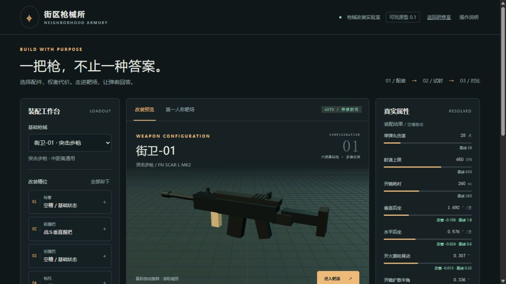

WU QI / GAME SYSTEM DESIGNER
游戏设计研修室
吴琦 高级系统策划
从玩家的选择出发，把系统规则、战斗与数值，落成可配置、可理解、可验证的设计。
0—1 研发 · 版本迭代 · 跨部门落地查看个人经历 ↓
01
PLAYABLE WORK可玩作品

网页原型实拍 / 改装工作台WEB DEMO / v0.1
街区枪械所
改装 → 试射 → 对比
六类基础枪、13 件配件。展开收益计算，看参数如何变化，再进入第一人称靶场体验压枪与开镜。
桌面鼠标键盘体验；A/B 配装保存在当前浏览器。固定靶场，无移动或多人对战。
进入可玩 Demo ↗阅读系统设计案 →02
12 ARTICLES设计方法与方案
围绕一个具体问题，展开目标、规则、配置结构与验证方法。文中的教学案例与已有实现分别注明。
战斗与枪械
从玩家的交战需求，走到配置、操作和反馈。
系统循环与内容设计
用周期、资源与生产安排，组织可理解的玩法选择。
配置架构与交互
明确对象、状态和职责，让复杂规则稳定落地。
03
GAME STUDY游戏研究
以 Deadlock 为研究对象，分析对线、反制、资源分配与转线的关系。依据具名文章与视频，保留来源和历史版本边界。
04
DESIGN WORKFLOW与 Rex 协作
让想法能追到依据，
让修改能回到问题。
我确定目标、校准方向并判断体验；Rex 协助查证材料、梳理结构、制作原型与执行校验。
阅读实际协作方式 →05
ABOUT THE DESIGNER关于吴琦
曾任拉阔《TeonR》系统组长，统筹从 0—1 研发与二测迭代；在英雄《危机曙光》任高级系统策划，承接关键版本的复杂系统设计、跨部门落地与团队带领。
以系统策划为主，兼顾战斗与数值。关注复杂规则如何成为玩家能理解的选择，也关注方案怎样转化为可执行、可验证的开发成果。
思绪的田野里捕捉到的萤火虫，
或许能在合适的机会像烟花一样绽放。